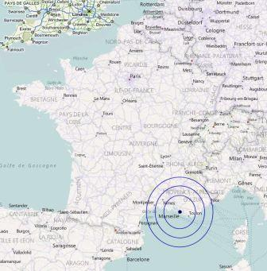

Lieux d'interventions
Ingénieur freelance basé à Marseille, j'interviens dans les Bouches-du-Rhône ou en région PACA.
Je me déplace également ailleurs en France pour des missions ponctuelles ou des formations.
J'ai une grande habitude du télétravail, ce qui me permet d'accepter des missions de plus longue durée à distance.